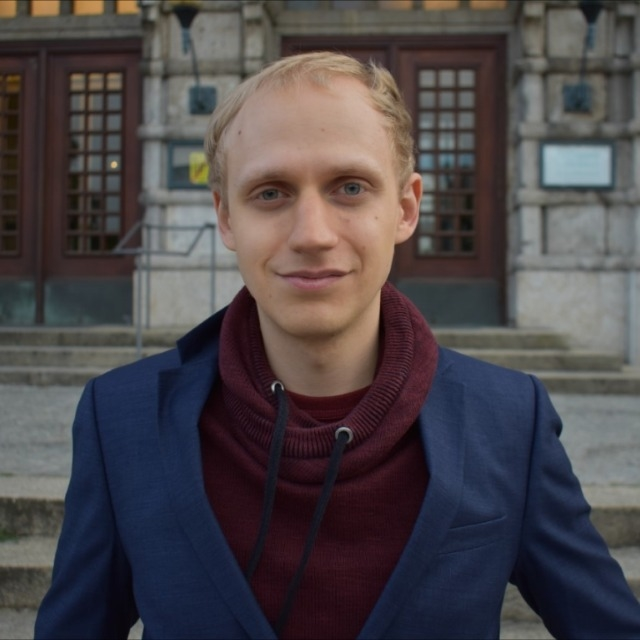

|  |
Timo Hansen
History and Philosophy student
I'm 28 years old and am originally from the northern part of Schleswig-Holstein. Currently, I am studying for a BA in History and Philosophy. During my time at the Gymnasium (high school), I was fascinated by IT and now would like to learn the basics of it. In my opinion, IT skills are essential in all fields and would help my chances of future employment. After I joined a student consultancy, I became particularly interested in working as an (IT) consultant. In my free time, I enjoy dancing and riding my bike. When I get the time, I'm doing volunteer work or learning new languages. |